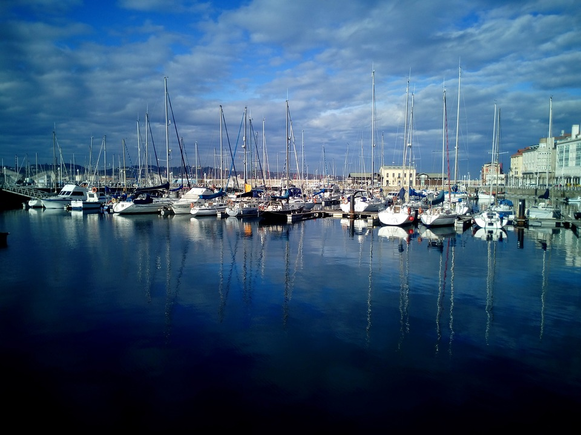
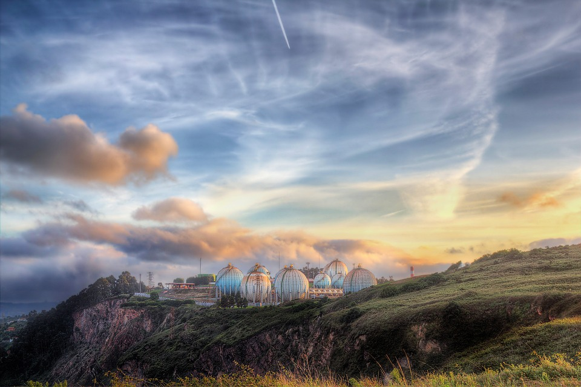
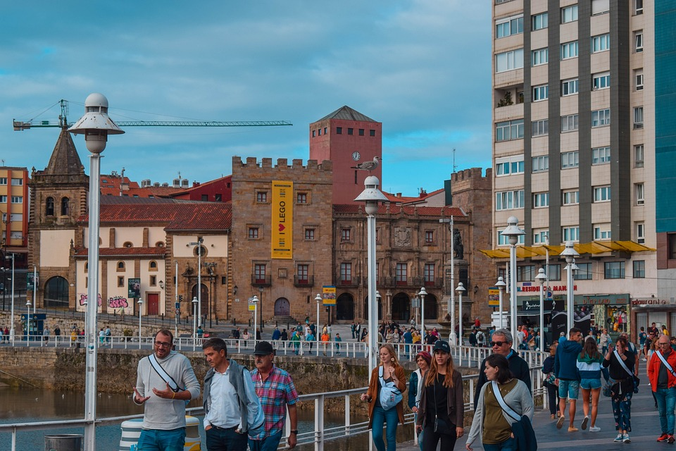

Gijón (en asturiano Xixón) es una ciudad española con la categoría histórica de villa. Es el único núcleo de población de la parroquia del mismo nombre. Su concejo —denominación que reciben los municipios en el Principado de Asturias es el más poblado de la comunidad autónoma, con 267 706 habitantes en 2022.
Geográficamente, la ciudad y su término municipal se localizan junto a una bahía en la zona central de Asturias, a 28 km de Oviedo y 26 km de Avilés. Allí forman parte de una gran área metropolitana que abarca veinte concejos de la región. Esta área, vertebrada por una densa red de carreteras y ferrocarriles, contaba con una población de 835 053 habitantes en 2011, los cuales la convierten en la séptima de España. En la península ibérica, la villa y el concejo se sitúan en la parte central de la cornisa cantábrica y, a escala europea, en la zona sur del Arco Atlántico.
Desde su fundación en época romana, el desarrollo del núcleo urbano ha estado vinculado al de su puerto, que actualmente es líder en movimientos de graneles sólidos en España. Hasta fechas recientes, Gijón tuvo un carácter eminentemente industrial, lo que favoreció su gran crecimiento de los siglos xix y xx. No obstante, durante las últimas décadas, la crisis de la siderurgia y el sector naval han llevado a la reconversión de su tejido productivo, transformando la ciudad en un centro turístico, universitario, comercial y de I+D+i. Así, además de contar con una red municipal de museos, alberga la Milla del Conocimiento Margarita Salas. Esta comprende el complejo cultural de la Universidad Laboral, un campus universitario y un parque científico y tecnológico.
La ciudad es conocida por antonomasia como «capital de la Costa Verde» y es asimismo capital de la provincia marítima de Gijón. Por el concejo discurre el Camino de Santiago en su ruta costera y en él tienen su sede el Consejo Consultivo del Principado de Asturias, la Radiotelevisión del Principado de Asturias y el Centro de Seguridad Marítima Integral de Salvamento Marítimo.



Geografía
Gijón está situado en el centro de la costa cantábrica del Principado de Asturias, España, en el suroeste de Europa, al norte de la península ibérica, sobre una rasa litoral en las estribaciones de la cordillera Cantábrica. Forma parte de la vertiente hidrográfica cantábrica y se sitúa en su punto más alto (Pico Cima) a 737 m s. n. m.. El punto más alto de la zona urbana (Ceares) se sitúa a 59 m s. n. m.. El término municipal de Gijón tiene una superficie de 182,1 km² y una forma vagamente rectangular. La ciudad, que ocupa una superficie aproximada de 13,9 km², está situada en el tramo costero central del concejo, en una bahía dividida por el Cerro de Santa Catalina (Cimadevilla) que separa la playa de San Lorenzo al este, del Puerto Deportivo, playas de Poniente y Arbeyal, astilleros y puerto de El Musel, al oeste.
Gijon - CentroGijon - EsteGijon - OesteGijon - Sur
Hidrografía
Gijón forma parte de la vertiente hidrográfica cantábrica. Los ríos más destacables del concejo son el río Aboño y el río Piles. El río Aboño es el de mayor tamaño y caudal. Nace en el Alto de la Miranda (Llanera) y desemboca en el límite entre el concejo de Gijón y el de Carreño formando así la ría de Aboño, fuertemente industrializada en las últimas décadas. Este río se encuentra embalsado a la altura de San Andrés de los Tacones, al oeste del concejo al lado de la autopista A-66, y sirve de abastecimiento de la empresa ArcelorMittal. El principal afluente del Aboño es el río Pinzales, de similar importancia hidrológica. El Pinzales nace en el concejo de Siero y atraviesa el concejo de Gijón de sur a norte. El río Piles, de gran importancia por atravesar parte del casco urbano de la ciudad, es un río corto y de caudal escaso cuyos 10 o 15 kilómetros transcurren íntegramente dentro de los límites del municipio, atravesando la parte este de la ciudad hasta desembocar en la playa de San Lorenzo. Existen otros arroyos menores (Peña Francia, Santurio, San Miguel, Tremañes, Cutis, Pilón, etc), de los cuales el más importante es el de La Ñora, que forma un tramo de la frontera con el concejo de Villaviciosa y desemboca en la playa del mismo nombre.
Clima
El clima de Gijón, determinado por la presencia del mar y la baja altitud del concejo, es un clima oceánico, con abundantes precipitaciones desde el otoño hasta los primeros días de la primavera, y un tiempo más estable y cálido en verano. Según los datos ofrecidos por la Agencia Estatal de Meteorología para la estación meteorológica de Gijón (período 1971-2000), la media del mes más frío (enero) fue de 8,9 °C, la media del mes más cálido (agosto) fue de 19,7 °C y la temperatura media anual es de 13,8 °C (media anual de máximas: 17,6 °C; media anual de mínimas: 9 °C). La nieve cubre ocasionalmente en el invierno los montes del concejo que rodean la ciudad y llega de forma esporádica al centro de la ciudad, con una media de un día de nieve anual.
Parámetros climáticos promedio de Gijón
Mes
Ene.
Feb.
Mar.
Abr.
May.
Jun.
Jul.
Ago.
Sep.
Oct.
Nov.
Dic.
Anual
Temp. máx. abs. (°C)
23.6
23
27
28
31.8
36.4
31.4
30
34.6
30.4
26.1
25
36.4
Temp. máx. media (°C)
13.1
13.8
14.9
15.6
17.8
20.2
22.4
23.2
21.8
19.0
15.6
14.0
17.6
Temp. media (°C)
8.9
9.6
10.7
11.8
14.3
16.9
19.2
19.7
17.9
15.0
11.6
9.9
13.8
Temp. mín. media (°C)
4.7
5.4
6.6
8.1
10.9
13.6
16.0
16.2
14.1
11.0
7.6
5.8
10.0
Temp. mín. abs. (°C)
-9.6
-6.0
-3.0
-1.4
2.2
5.8
5.6
5.2
4.7
2.6
-3.4
-6.8
-9.6
Precipitación total (mm)
94
85
74
93
79
47
45
54
70
104
120
104
971
Días de precipitaciones (≥ 1 mm)
12
11
10
12
11
7
6
7
8
11
12
12
121
Horas de sol
103
109
137
151
167
180
194
190
158
132
106
92
1721
Fuente: Agencia Estatal de Meteorología
Cultura
La actividad cultural es muy amplia, y hace especial hincapié en la formación pública. Desde 1981 existe una Universidad Popular con talleres y cursos, así como una red de centros sociales y bibliotecas en cada barrio. Tienen especial importancia el Ateneo Jovellanos, institución liberal fundada en 1953 con el impulso del catedrático y político Torcuato Fernández-Miranda, el Ateneo Obrero de Gijón, una entidad cultural con más de cien años de vida, Ateneo de la Calzada, el Antiguo Instituto Jovellanos y un futuro centro cultural en Cimadevilla, la Tabacalera.
Se realizan actividades culturales todo el año, que aumentan considerablemente en los meses de verano, sobre todo en agosto por las fiestas de la Asunción (15 de agosto), con fiestas, música y teatro, que complementan la programación continua del Teatro Municipal Jovellanos. Entre los actos consolidados en la ciudad podemos destacar:
FETEN en febrero
L.E.V. Festival - Laboratorio de Electronica Visual - Festival Internacional de Creacion Audiovisual de Gijón, a principios de mayo
Feria del Libro de Gijón/Xixon - FELIX, en Junio
Metrópoli Gijón, Festival Media de Cultura y Entretenimiento de Gijón, incluyendo una Cómic-Con, que se celebra a finales de junio en el Recinto Ferial.
La Semana Negra, en julio.
El Festival aéreo Internacional en julio.
Festival Arco Atlántico, en julio
Festival Folclórico Internacional, finales de julio.
Feria Internacional de Muestras de Asturias (FIDMA), en agosto.
El Festival Internacional de Cine de Gijón, a finales de noviembre.
Encuentro literario La Arribada.
Los centros municipales programan en sus sedes todo tipos de espectáculos, destaca la cita con el jazz que se celebra al menos una vez al mes en el Antiguo Instituto bajo el nombre Jazz en el Centro. Desde 2006, la ciudad cuenta con un coro de voces blancas conocido en toda la región, los Niños Cantores de Gijón, que ofrecen anualmente conciertos de diferentes iglesias y parroquias de la ciudad, tales como San José, Nuestra Señora de Fátima o San Nicolás de Bari entre otros.
Museos
Museos de Gijón:
Historia: En Gijón existen varios museos sobre su propia historia como las Termas romanas de Campo Valdés, la Villa romana de Veranes, el Parque arqueológico de la Campa Torres y la Ciudadela de Celestino Solar; así como otros dos sobre la historia de Asturias: el Museo del Ferrocarril de Asturias y el Museo del Pueblo de Asturias, que incluye el Museo de la Gaita.
Arte: Hay varios museos que exponen, principalmente, colecciones de un solo pintor: Museo Barjola, Museo Nicanor Piñole y Museo Evaristo Valle así como uno de arte contemporáneo, el centro LABoral de Arte y Creación Industrial y otro más generalista, el Museo Jovellanos, cuyos grandes fondos serán expuestos en parte en el museo proyectado de Tabacalera, formando la mayor pinacoteca de la ciudad.
Naturaleza: Destacan el Jardín Botánico y el Acuario de Gijón, orientados a la flora y fauna cantábrica.
Gastronomia
Podemos destacar dentro de la comida clásica, como primeros, les fabes, las reinas en la cocina asturiana, ya sea en la conocidísima fabada asturiana con compango (chorizo, morcilla asturiana y lacón), como con almejas, centollo, con caza, etc y el pote asturiano. En los segundos, el puerto aporta sabrosos pescados y mariscos del Cantábrico con el que se realizan recetas tradicionales como la chopa a la sidra, besugo a la espalda, ventresca de bonito o los oricios, aunque también tienen su importancia los platos de carne de las parroquias del interior como la ternera o el pitu de caleya. Los postres típicos son el arroz con leche, tarta charlota, tarta gijonesa, biscuit Gijón, bombones de sidra de. Debería resaltarse que las «princesitas» siguen realizándose de forma artesanal.